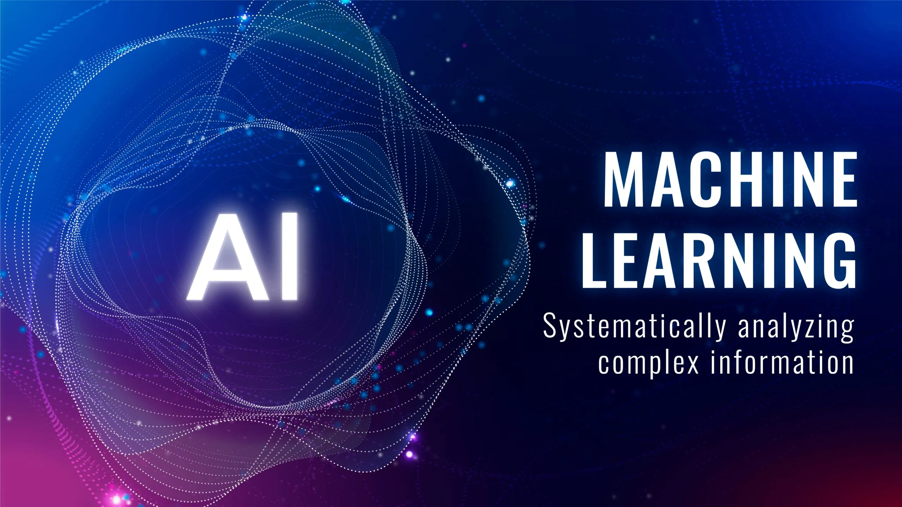

Explore GG Connect
Welcome to our AI/ML blog where we share the latest trends, tutorials, and insights in the field of Artificial Intelligence and Machine Learning. Stay tuned for regular updates!
Share Your Experiences
We encourage our readers to share their own experiences and projects related to AI/ML. Your contributions can help build a vibrant community of learners and practitioners.
Machine Learning Basics
Become a part of our growing community of AI/ML enthusiasts. Connect with like-minded individuals, participate in discussions, and collaborate on exciting projects.
Explore GG Connect
Welcome to our AI/ML blog where we share the latest trends, tutorials, and insights in the field of Artificial Intelligence and Machine Learning. Stay tuned for regular updates!
Share Your Experiences
We encourage our readers to share their own experiences and projects related to AI/ML. Your contributions can help build a vibrant community of learners and practitioners.
Machine Learning Basics
Become a part of our growing community of AI/ML enthusiasts. Connect with like-minded individuals, participate in discussions, and collaborate on exciting projects.
Machine Learing Tutorial
Machine Learning is a branch of aritficial intelligence that ffocuses on going back to the last night we met i cannot ofrget that ever because its not meant to forgot such an wonderfulll moment to get distured codi
